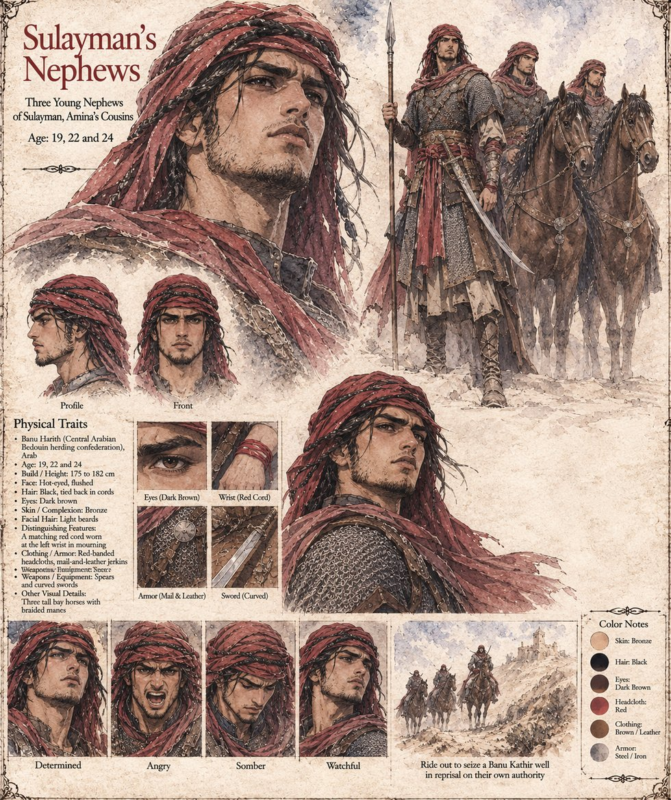

Sulayman's Nephews
Three young nephews of Sulayman ibn Ghanim · Amina's cousins · ride out to seize a Banu Kathir well on their own authority · nineteen, twenty-two and twenty-four by the sheet
Three young nephews of Sulayman, and so cousins of Amina, who loved their cousin and wanted someone to be sorry. By the second day they have ridden out on their own authority to seize a Banu Kathir well in reprisal. Sulayman rides out after them alone and brings them back, with a threat he would later say was the only one he ever made that he was not entirely certain he could carry out. Their riding is part of what narrows his choices: men carrying his own name are already moving whether he judges the case or not. The manuscript names none of them.
The sheet draws the three together, tall and muscular young men between 175 and 182 cm, bronze-skinned and dark-eyed, with light beards and black hair tied back in cords under red-banded headcloths, in mail-and-leather jerkins with spears and curved swords, mounted on three tall bay horses with braided manes. Each wears a matching red cord at the left wrist, which the sheet gives as mourning. Its portraits give the three a single face, hot-eyed and flushed, and its expression panels run determined, angry, somber and watchful; the last scene, captioned Ride out to seize a Banu Kathir well in reprisal on their own authority, shows three riders on a hillside track below a fortress. The ages of nineteen, twenty-two and twenty-four, the mourning cord and everything visual are the sheet's.